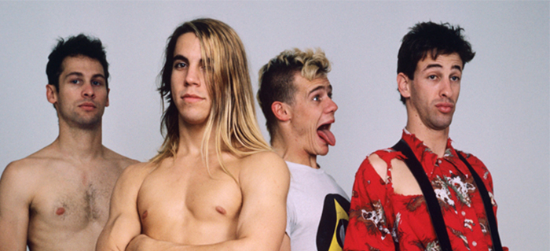

Geschiedenis
Begin Red Hot Chili Peppers
Red Hot Chili Peppers heetten oorspronkelijk Tony Flow and the Miraculously Majestic Masters of Mayhem. De band werd in 1983 opgericht voor een enkel optreden. Ze waren zo populair dat aan hen werd gevraagd om de volgende week nog een keer terug te komen. De eerste leden van de band waren Anthony Kiedis (zanger), Flea (bas), Hillel Slovak (gitaar) en Jack Irons (drums). Ze kenden elkaar allemaal van Fairfax High School in Los Angeles.
In november 1983 maakte manager Lindy Goetz een deal met EMI America en Enigma Records voor zeven albums. Slovak en Irons beschouwden de Red Hot Chili Peppers nog steeds als slechts een bijproject en stopten daarom in december 1983 om zich te concentreren op "What Is This ?". In plaats van de Red Hot Chili Peppers te stoppen, rekruteerden Kiedis en Flea nieuwe leden. Cliff Martinez, een vriend van Flea en lid van de punkband The Weirdos, was de nieuwe vervanger voor Irons. De band hield audities voor een nieuwe gitarist, maar besloot na een paar uitvoeringen dat Weirdos-gitarist Dix Denney niet paste. Kiedis beschreef de twee eindkandidaten, Mark Nine en Jack Sherman, als een "hip avant-garde art school refugee"' en een nerd uitziende man met een naar achter gekamde afro en een onbekende achtergrond. Muzikaal klikte Sherman meteen met Flea en Martinez, en hij werd ingehuurd als Slovaks vervanger.
Algemeen succes
Nadat Slovak stierf en Irons de band verliet, gingen D. H. Peligro (van de band Dead Kennedys) en DeWayne "Blackbyrd" McKnight bij Red Hot Chili Peppers. Geen van deze twee werkte heel goed met de band, dus werden ze vervangen. Peligro vertelde een vriend van hem, John Frusciante, auditie te gaan doen. Zijn auditie ging goed en hij sloot zich aan als gitarist. Een vriend van de band vertelde hen toen over Chad Smith. Smith had een zeer goede auditie en sloot zich aan. Tijdens de opname van hun volgende album, debatteerde Frusciante met Michael Beinhorn, de producent. Beinhorn wilde dat Frusciante heel hard op zijn gitaar zou spelen, zoals heavy metal-muziek, maar Frusciante hield niet van deze stijl.
Het volgende album van Red Hot Chili Peppers, Mother's Milk, werd zeer succesvol. Het verkocht goed en liedjes ervan verschenen vaak op de radio. Het verscheen ook op MTV, omdat de band een populaire cover deed van Stevie Wonder's nummer "Higher Ground". Het album bereikte nummer 52 op de Billboard 200-chart en werd door de RIAA als "goud" gecertificeerd.
Fruciante's terugkeer
Na het verlaten van Red Hot Chili Peppers, heeft Frusciante zelf enkele albums gemaakt. Hij had ook een heftige verslaving aan heroïne. Hij was zo verslaafd dat hij af en toe dicht bij armoede en dood was. Frusciante ging naar een kliniek om af te kicken. De kwaliteit van zijn leven verbeterde langzaam. In april 1998 vroeg Flea aan Frusciante om opnieuw lid te worden van de band. De rest van de band was blij dat hij terugkwam. Kiedis noemde het het "beslissende moment" van de carrière van de band tot nu toe.
De band was blij dat Frusciante weer lid werd, maar het duurde een tijdje voordat ze weer nummers begonnen te maken. Dit kwam omdat hij al zijn gitaren had verkocht om drugs mee te kopen. Het kostte hem ook een tijdje om te wennen aan het opnieuw spelen van muziek met een band. De band bracht hun zevende album, Californication, in 1999 uit. Het had minder nummers gebaseerd op rap en funk dan hun vorige albums. Het album concentreerde zich meer op melodieuze gitaarriffs. Californication was erg populair. Het verkocht meer dan 15 miljoen exemplaren. Drie van de singles op het album, "Scar Tissue", "Otherside" en "Californication", bereikten nummer één in de Modern Rock Tracks-grafiek.